二战后的罗马，街头到处是失业者和小偷，整个城市弥漫着贫穷和绝望的气息。
这个时期，一群意大利电影艺术家抛弃摄影棚，主张扛着摄影机上街，采用实景拍摄，将镜头对准街道里的小人物和城市里的贫穷。
为了追求这种电影艺术的新现实主义，他们甚至放弃使用职业演员，启用非职业演员作为电影主演。
这一切都为了最大程度地真实反应社会现实，抨击社会不公和黑暗。
其中，最具代表性的作品就是德.西卡的《偷自行车的人》。
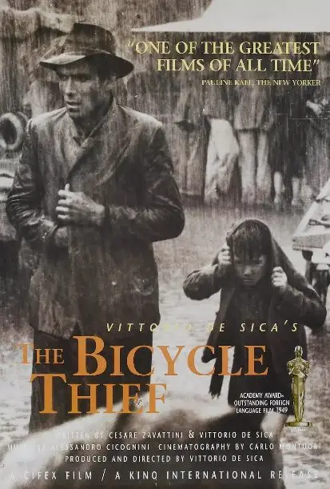
这部电影获奖无数，常年居于各大权威电影榜单前列。
在大虾自己的介绍中，我曾提到这部电影让我真正爱上了电影，让我对黑白片没有了偏见，对年代久远的作品不敢轻忽。
因为我在这部1948年的黑白电影里竟然看到了自己的童年，那种强烈的共鸣不是来自于经历的相似，而是这部电影拥有直抵人心深处的力量。
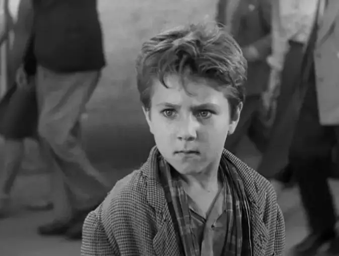
这部电影讲述了一个叫做里奇的失业者的故事。
二战之后，百业凋零，大家会为了一个工作争的头破血流。
里奇失业已有两年之久，他终于找到了一份张贴海报的工作，这让他艰难的生活燃起了希望。
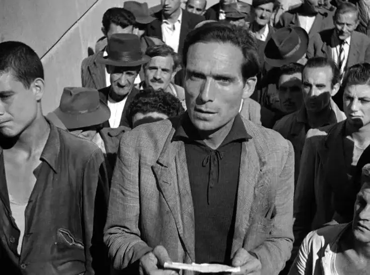
他激动地计算着这份工作带给自己的收入，平时工资+加班工资+补贴.......哇，收入相当可观。
可是，还没来得及高兴，里奇又眉头紧锁陷入到巨大的痛苦中。
原来要得到这份工作，他必须要有一辆自行车，可家里都快揭不起锅了，怎么可能有钱买自行车。
多么好的机会，多么骨干的现实！
后来，妻子为了支持里奇，忍痛用自己作为嫁妆的三套床单换了一辆自行车。
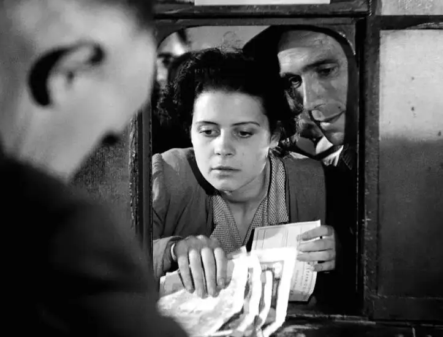
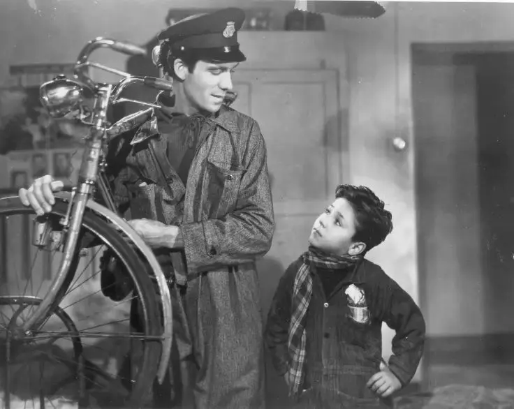
终于，一家人都活在新的希望中。
里奇也终于因为拥有了工作重拾了作为丈夫和父亲的尊严。
他兴奋地骑着新自行车带着妻子从窗外看了自己的工作地点。
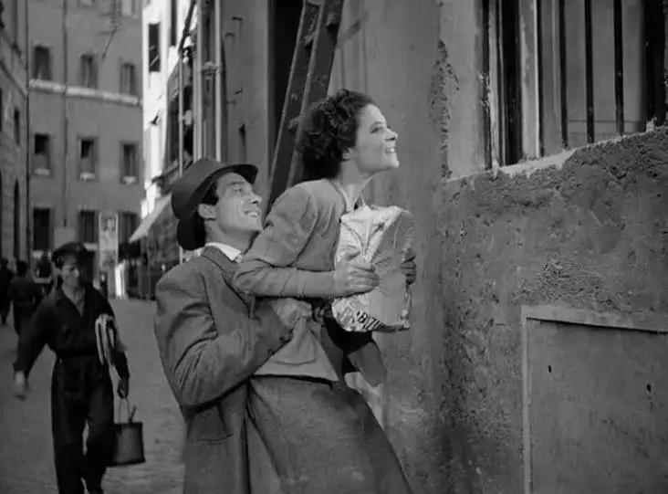
儿子布鲁诺更是将自行车看为至宝，用自己的小手很用心的擦洗着自行车的每一个部位，甚至他都会为自行车上已有的破损而痛心不已。
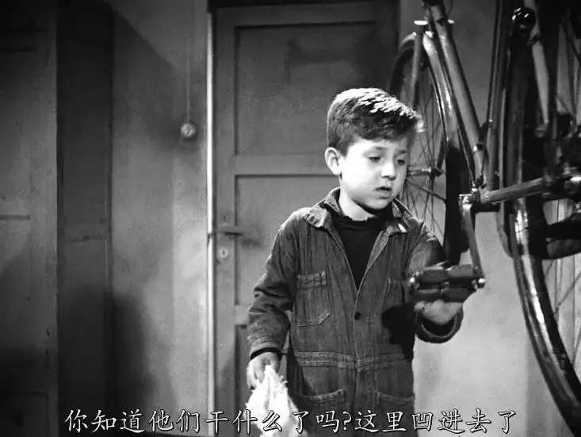
布鲁诺像一个小大人一样懂事，他知道这辆自行车对于整个家庭有多重要，他知道自己伟岸的父亲将要骑着它为家里赚很多很多的钱。
就这样，里奇怀着希望起航了。
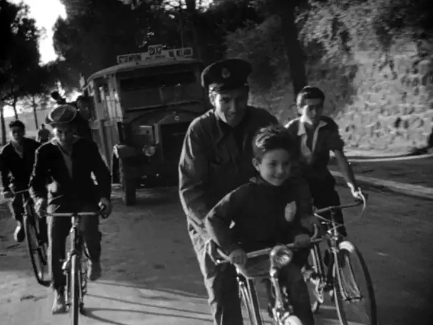
可是工作的第一天，他的自行车竟然被偷了！！
里奇呆望着小偷骑着自己的自行车狂跑半天没有反应过来，接着他拼尽全力去追小偷，可“希望”和小偷却渐行渐远直至完全淡出自己的视线。
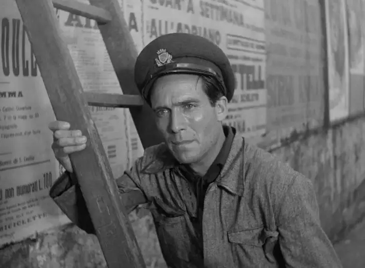
里奇的世界崩塌了，他告诉自己，一定要把自行车找回来，于是里奇叫带着朋友和布鲁诺在罗马街头寻找了一整天........
-01- 现实主义
电影讲述的故事非常简单，就像巴赞所言“它甚至不够一篇社会新闻的素材”。
如果刊登在报纸上，大抵也只有一行字：一个人的自行车被偷了。
这几乎没有任何悬念，凭直觉我们也知道自行车很难寻回。
但是我们还是愿意怀着既希望又忐忑的心跟着里奇和布鲁诺走完罗马的每一个街头。
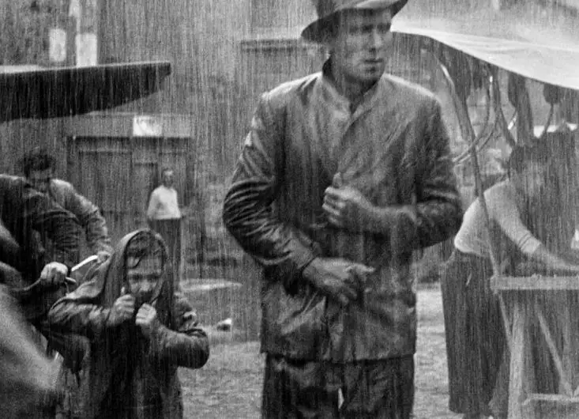
因为电影刻画的场景太真实了，每个人都不忍心看着老实巴交的里奇绝望、可爱的小布鲁诺心碎。
如果找不到自行车，那将是一件非常可怕的事，我们难以想象他们的凄凉处境。

这就是现实主义的魅力，一般性的故事片靠层出不穷的悬念吸引人的注意力，现实主义作品只需要一双布满老茧的手便可以让人震撼不已。
这部作品能够呈现的如此真实，除了得益于实景拍摄以及德.西卡的精心创作，更得益于两位非职业演员。
饰演里奇的朗培尔拖•马奇奥拉尼当时是一个工厂工人，此前没有受过任何表演训练。
但他就是里奇的最佳饰演者，对他而言，里奇只是换了名字的自己而已，失业的窘境、家庭的艰难、作为穷爸爸的心酸都写在了他的脸上。
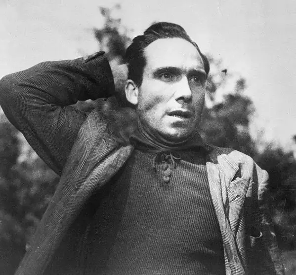
一位豆瓣网友形容的颇为准确：
他微微凹陷的脸颊和说话时聚作一团的抬头纹都让人对他有种无言的叹息。
但最令人难忘的还是他的眼睛，那里面蓄积了某种看似平缓却又默默暗涌的忧伤，浸泡着很多欲言又止的隐忍与酝酿，仿佛两口苦水井，深不见底。
这些视觉元素和肢体语言完全能够将里奇的处境毫无障碍地传递给观众，他的艰难就是我们的艰难，他的眼泪就是我们的眼泪，我们在里奇的身上看到了自己经历过的脆弱和无力。
而布鲁诺的饰演者当时只是一个在街头帮父亲卖花的男孩，他当时在街头看热闹而进入德.西卡的视线。
德.西卡并没有让他试镜，只是让小男孩在他面前走了一段路，便确定小主演就是他了。
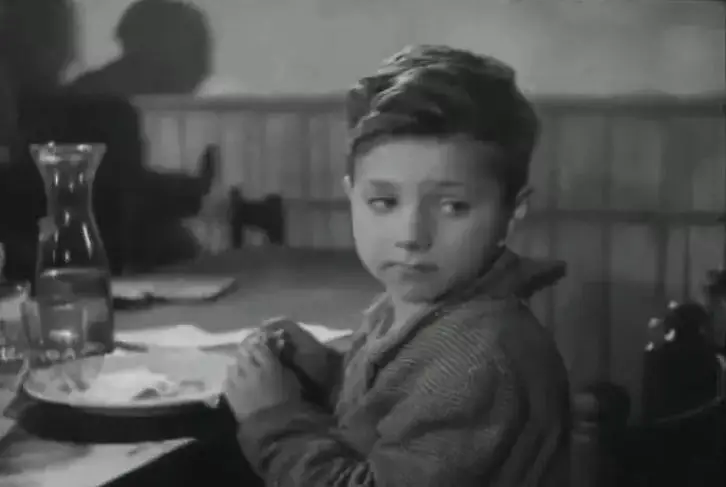
德.西卡的直觉非常对，布鲁诺就是他要找的人，8岁本应该是天真烂漫的年纪，但这个小男孩却已经在街头卖花补贴家用。
“穷人家的孩子早当家”，布鲁诺就是这样一个小大人，他既懂事又有这个年纪的孩子气。
当看着小小的布鲁诺跟着爸爸焦急地行走在街头，看着这个小孩眼睛紧紧地盯着自行车市场的每一个铃铛的样子，我们都心疼不已。
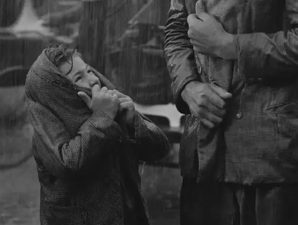
-02- 社会不公
李安说：
当我第一次看《偷自行车的人》时我感动得哭了，此后我把这部影片反反复复看了很多遍。
如果让我来拍这部电影的话会是一个简单的情节剧，但是意大利新现实主义导演却可以将这个类型提升至社会哲学的高度。
这实在是令人难以置信，他们超越了戏剧本身。
这部电影大巧若拙，寻找自行车的过程看似随意，但却不留痕迹地揭露了当时社会的不公。
当里奇抓到小偷，被小偷的街坊领居围住施压时，警察并不是正义的维护者，而变成了一个息事宁人的墙头草。
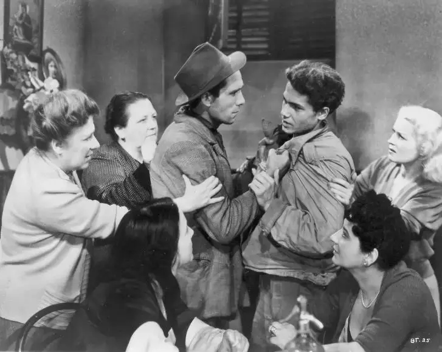
可是，息事宁人的代价就是牺牲像里奇这样无辜受害者的正当权益。
当警察丢下里奇置身事外时，作为受害者的里奇不仅有冤无处报，还受到人群的谩骂和推搡。
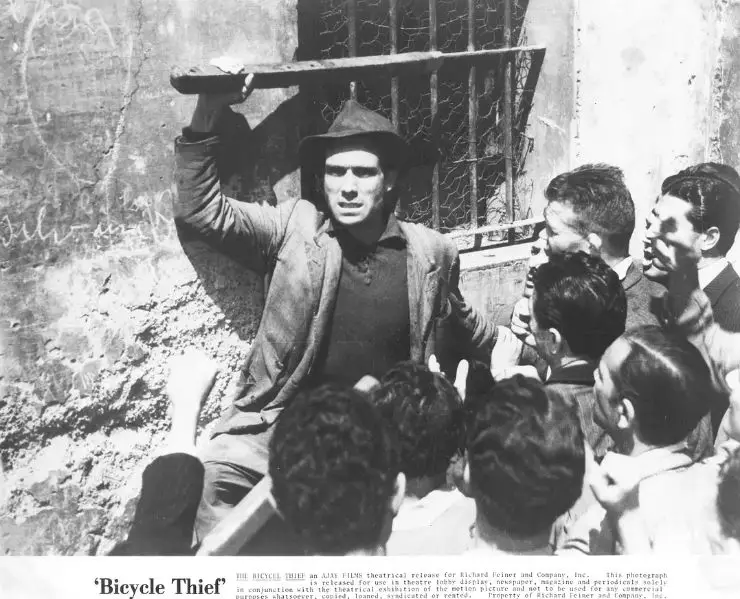
这样的不公直接堵住了里奇解决问题的合法途径，最后走投无路的里奇只能成为另一个偷车賊。
把安身立命的老实人逼上绝路，这样的社会有多绝望。
因为目睹了里奇变成偷车贼的全过程，我们丝毫不会唾骂里奇的行径，那偷里奇自行车的小偷，我们可以怨恨么。
当里奇找到他时，他也是家徒四壁，而且患有癫痫病，他此前经历了什么才选择成为小偷，我们都难以想象。
穷人们为了生存而互相偷窃，这是多大的悲剧。
而富人们却站在远处充满鄙夷地看着穷人苦苦挣扎。
电影中有一个场景令人印象深刻，里奇带着布鲁诺去饭店奢侈了一把，他们点了两个拔丝面包。
正当布鲁诺为此欢呼雀跃时，他发现旁边桌的一个富人小孩正很鄙视地看着这个小乡巴佬，布鲁诺不禁抿着小嘴自卑地低下了头。
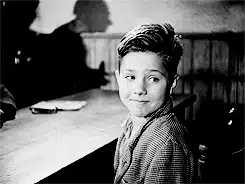
里奇看出了布鲁诺的心思，告诉他，要吃那样的大餐，月收入必须要好几万，我们就不要多想了。
仅仅一个细节，便可窥见当时社会巨大的贫富差距和难以打破的阶层固化。
这部电影的高明之处在于并没有刻意强化阶级对立，树立仇恨，而是哀而不伤，不着痕迹地表现着身边的一切。
这才是真正的左派电影！
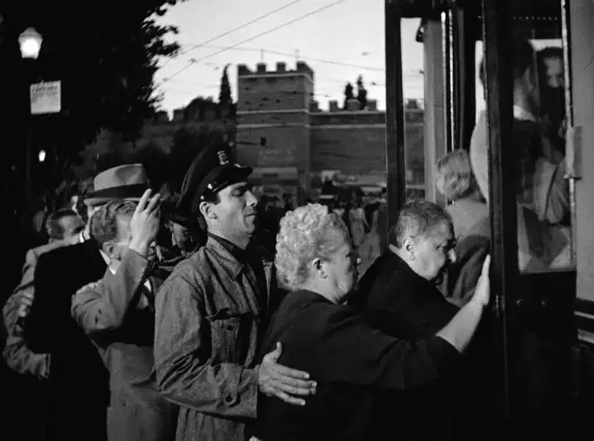
-03- 倒塌的父亲
社会是很不公，生活是很艰辛，这些都很无奈。
可让这些不堪，发生在一个孩子眼前就让人很心碎。
这部作品最感人的就是里奇和布鲁诺之间的父子情。
当里奇在教堂中跟丢了和小偷有瓜葛的老人后，布鲁诺不解地问里奇，你问什么不让他在教会喝完汤呢。
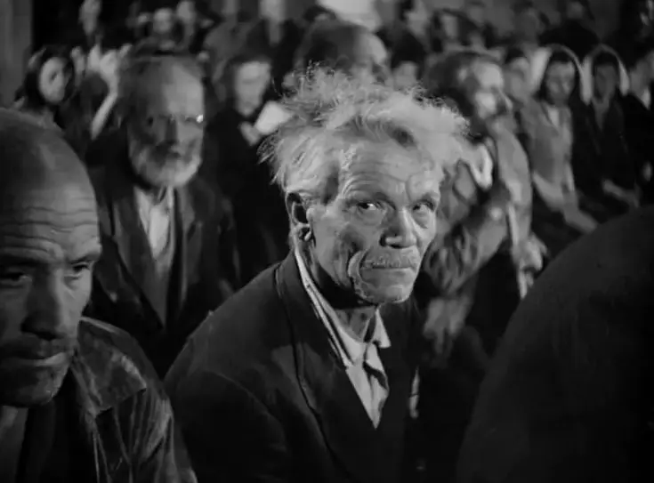
一直寻找无果，里奇心中早已气急败坏，面对那个坏蛋，儿子竟然替他说话。
里奇非常生气，给了布鲁诺一巴掌，将所有的愤懑发泄在儿子的身上。
布鲁诺哭着问里奇，“为什么要打我”，接着便离里奇而去。
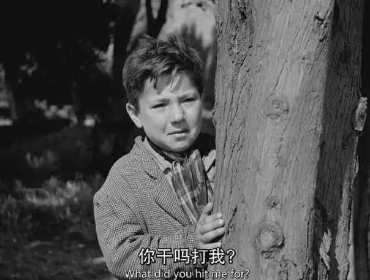
处于极度焦躁的里奇也没有去追布鲁诺，而是继续寻找自行车。
后来忽然听到有人说一个孩子溺水了。
里奇心里逐渐着急起来，不会是布鲁诺想不开跳河了吧！
里奇惊恐万分，慌张地跑向人群。
发现溺水的男孩不是布鲁诺后，里奇长舒了一口气，这时他才看到布鲁诺还在远处生孩子气。
自行车没了，还有儿子啊，为什么非要这样啊，为了哄布鲁诺，里奇带布鲁诺下饭店奢侈了一下。
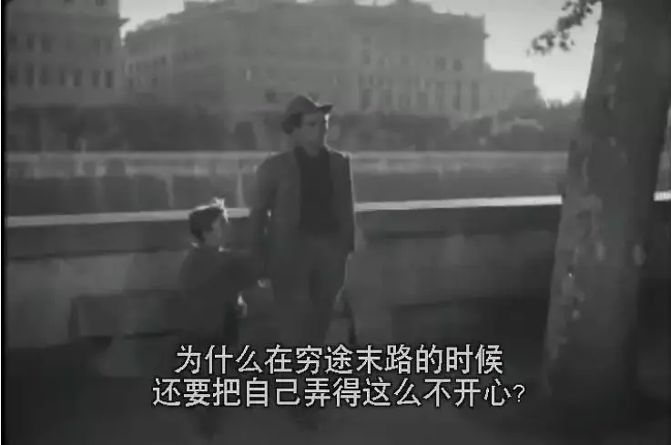
饭桌上，里奇告诉儿子“没有什么是解决不了的，除了死亡.....喝酒！男子汉就该这样！别让你妈妈知道。”
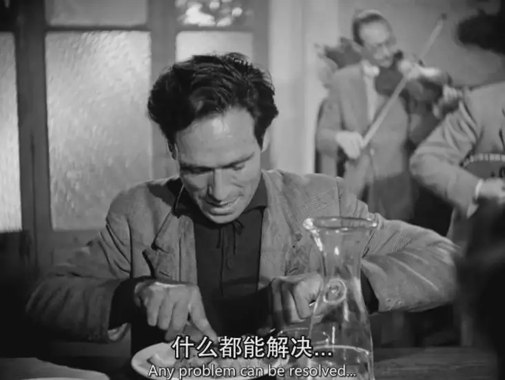
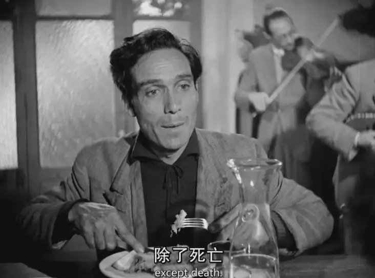
在孩子面前，每个父亲都希望自己伟岸。
布罗诺看着爸爸带给自己的惊喜而绽放着纯真的笑容。
可是潇洒话谁都会说，赤裸裸的现实依旧让里奇无法面对。
没有了自行车，就没有了工作，没有了工作就没有了生活下去的希望和尊严。
后来，里奇再三犹豫下决定偷一辆自行车。
当他将布鲁诺支开让他先乘公交回去后，里奇扑向了别人的自行车。
可是，他没有别人走运，被抓了个正着。
更让他绝望的是，布鲁诺没有挤上公交车，他亲眼目睹了自己的爸爸成为了一个偷车贼，并像一个过街老鼠一样被人追赶。
看到爸爸被抓、被人推搡、谩骂，布鲁诺吓哭了，他冲向人群哭喊着“爸爸、爸爸”。
自行车的主人看到此情此景心生怜悯便放过了里奇。
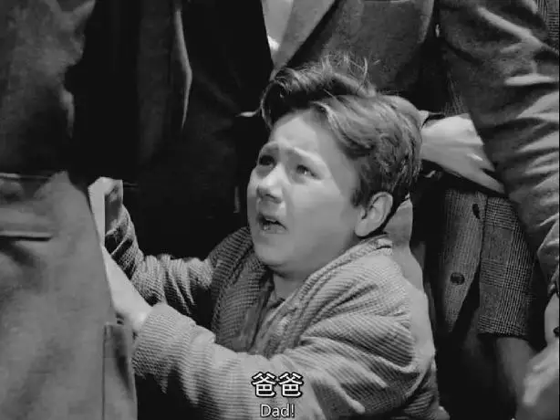
里奇因为儿子而躲过了牢狱之灾。
常年的失业本来已经让一个男人失去了社会尊严，如今作为父亲的尊严也被践踏而荡然无存，那个伟岸的父亲形象彻底倒塌了。
里奇失魂落魄地走在路上，身体全麻已经没有任何知觉，就是被身边的车刮到也没有任何感觉。
他看着前方却什么也看不到，整个世界都昏暗了，他不敢望向哽咽着的布鲁诺，也没有信心再次抓起儿子的小手。
这一次，布鲁诺主动去握了爸爸的手，他从没见过父亲如此落魄，他不知道如何安慰爸爸，只知道不离不弃地跟在爸爸的身后。
布鲁诺手心的温热让里奇慢慢恢复了知觉，这位高高大大的父亲第一次在儿子面前哭了，像一个孩子一样无助地哭了。
最后镜头结束在父子二人涌入到人流中，这样的故事只是茫茫人海中的一个.......
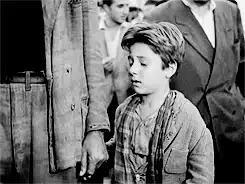
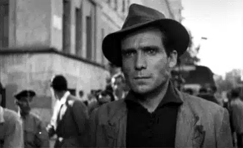
-04- 追问
这部内涵丰富的作品的确给了每个人一个思考：
如果你生命中的至宝被上帝拿走了，作为个体和群体将如何面对？
里奇赖以生存的自行车没了，他曾走过两条路。
第一条就是警察为代表的政府机构，显然这是一条死路。
另一条就是以教会为代表的宗教，在电影里的刻画中，这依旧是一条死路。
电影中关于信仰有四处体现。
第一处是里奇的床头上挂着十字架，他的妻子为里奇的工作一直在找一个“假先知”算命。
显然，里奇对此不屑一顾。
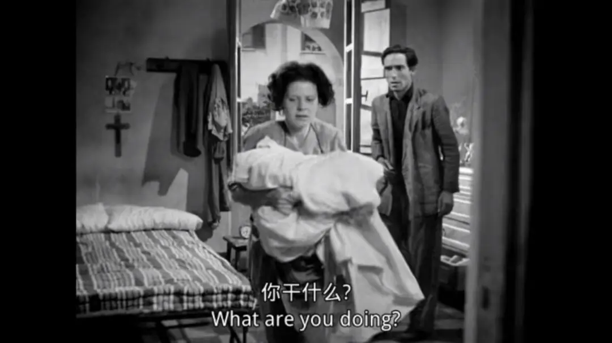
第二处是里奇在焦急地寻找中，这时候来了一群神学生，他们似乎在用德语讨论着问题，丝毫没有注意到身边这个眉头紧锁的倒霉蛋。
第三处是里奇因为追一位老人而进入教会，此时教会正在敬拜，里奇心里焦躁不安四处寻找潜藏其中的老人，教会只是维持秩序，并没有过多关注里奇遇到的困难。
第四处是里奇寻找无果后，不得不去“假先知”那里询问怎么才能找到自行车，而“假先知”用一句似是而非的话便将里奇打发了。
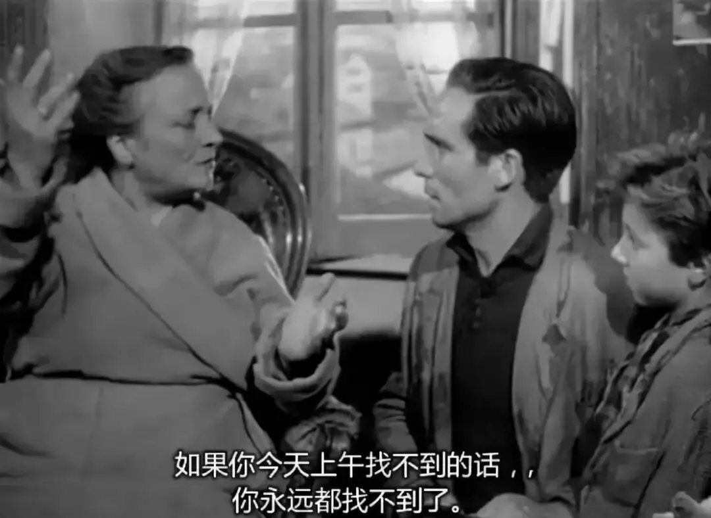
虽然对教会的负面刻画有导演自己的立场原因。
但这些也都是对我们的提醒，面对即将到来的共克时艰，作为上帝的代表，我们需要在邪恶面前勇敢发声，需要护庇软弱贫寒者。
信仰从不只是教义，更多是真实流露的生命。
当“里奇”为丢掉“自行车”而伤心绝望时，就算我们无法帮他找回“自行车”，也可以像布鲁诺那样对他们不离不弃，为他们守望。
不过这种群体性的生命共同体也不能成为我们的偶像，它也注定不会完美，我们不能报过高的期望。
群体性的陪伴最后也只是要帮助个体来到上帝面前，让你有力量、有盼望面对自己的荒凉。
如果你看自己的容颜为至宝，当时间拿走你的美貌后，你将如何面对。
如果你把才华看为至宝，当你有一天一个字也写不出来时，你将如何面对。
如果你将另一伴看为至宝，当死亡将你和他分开后，你将如何面对。
如果你将金钱看为至宝，当千股齐绿时，你将如何面对。
如果你把自己的身体看为至宝，当你身体衰竭不能自理时，你将如何面对。
........
如果细细想一下，你会发现人类其实一直在失去，一直行走在荒凉和无助中，所以每个阶段都需要不同的偶像来刺激自己坚持下去。
小时候的偶像是长大和知识，青年的偶像是爱情和面包，中年的偶像是身体和事业，老年的偶像是子女和及时行乐，直至死亡来临，才不得不面对自己的荒凉处境。
这种心里惯性会让每个人盼望一种人间奇观，盼望将荣耀归给自己。
所以很多人会觉得自己获得的成功越大时，信仰离自己越近。
自己越是生活自律、井井有条，越会觉得信仰真切。
我们不习惯、也不喜欢在荒凉和软弱无助中依靠信仰。
其实，人类最理想的状态就应给停留在“软弱无助”中，我说的这种“软弱无助”并不是物质上、世俗意义的无助，而是一种降服在绝对真理面前的柔软状态。
越过一步就是骄傲和自欺，因为荣耀出于上帝，也归于上帝，荣誉与人类无关。
过去我不服，如今我虽心有感触，依旧时常叛逆，这将是我们需要一直操练的功课。

这里没有挑逗你眼目情欲的小鲜肉
也没有挑动你肉体情欲的段子
更没有膨胀你今生骄傲的鸡血
我们只在乎那些最质朴真诚的作品
在那里我们才能恢复真正的想象力
我们也坚信这才是我们真正需要的

ID:Six_hundred_hits
长按二维码，一键关注
【六百击】
-END-
电影评论
尽情分享朋友圈

苹果打赏通道
小提示：文末广告是腾讯配送广告，内容与本号无关，但您的每次点击（无需反复点）都会给平台带来几毛收益，欢迎您点击支持六百击。